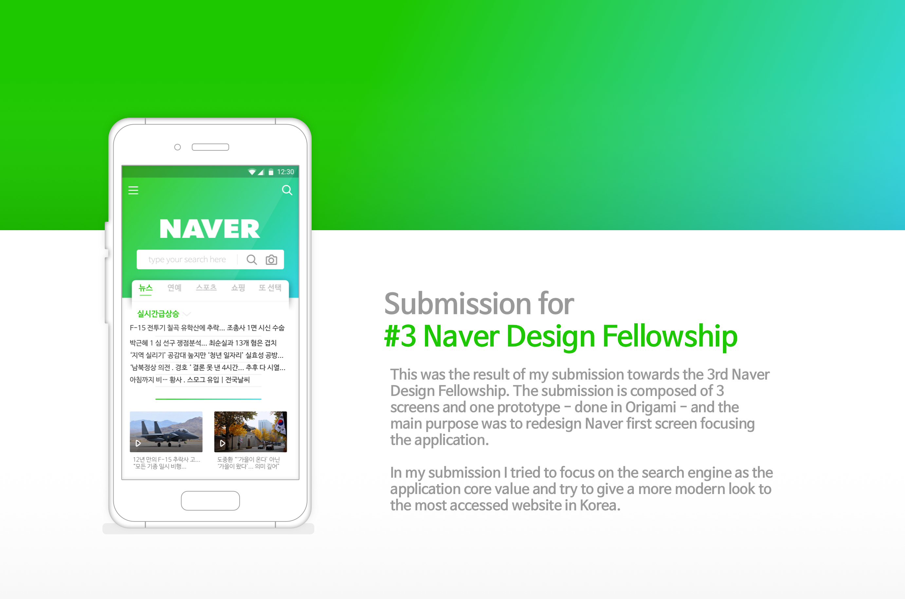
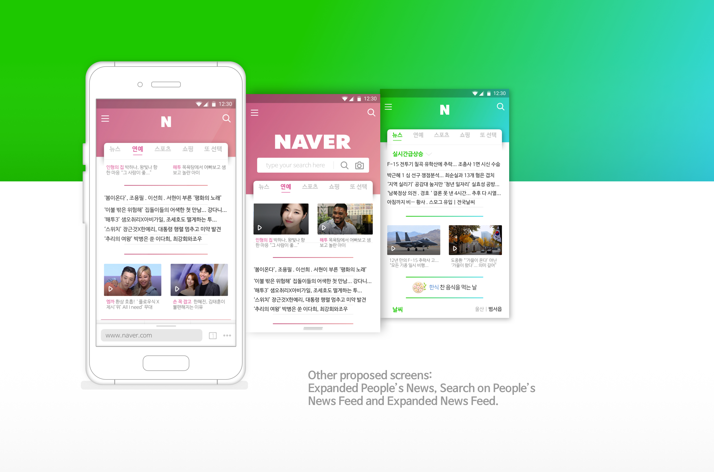

Ux Case 02 - 3# Naver Fellowship Entry
Project Overview
The task was to participate in the #3 Naver Fellowship Program was to redesign one screen or interaction of the Naver Application. To do this task I interviewed 3 people and gathered what they like and dislike about the current design. People loved Naver because of its content and considered a more important factor than the design of it. Thus, I tried to change it sightly to not lose its main quality but cover what is lacking while providing some consistency on the process.
Used tools : Sketch, Origami, After Effects
Research
Research metodologies
The first step in this work was to talk with Naver users. I talked with 3 Koreans and 1 foreigner. all of them agreed that Naver content was the main reason why they access the website. That can be confirmed by the amount of visitors the page has daily. However, each one of them has their own specific reason to visit the site.
When asked about the application, they felt confused, since they don’t use it as often as the website. Later on when I tried the application, I also feel confused. I don’t know if it is an application, a browser, a portal. It has too much information.
Also, I could notice that there is no consistency on the icons and colors, each page has their own GUI, making difficult to ensure a unique brand image. It also makes people wonder if
they are using an app, a browser or what.
Therefore the goals for this project were to bring: Mobile experience with consistency and focus on the search engine respecting the limit of 6 slides presentation given by the company.
The submission is composed of 3 screens and one prototype - done in Origami - and the main purpose was to redesign Naver first screen focusing the application. In my submission I tried to focus on the search engine as the application core value and try to give a more modern look to the most accessed website in Korea.
Research: Interview
Contextual interview over Naver design
Using an open structured interview I was able to gather various insights of what the users thought about Naver and its current design. However, when reffering to Naver they associated with the desktop version instead of the mobile one. Therefore, there is an opportunity to make the application diferent from its current design.
Research: State of the Art
Current App lack of consistency
Using the application I could perceive the lack of consistency on it. Decided to register it for proof and inspiration.

Ideation: Pen and Paper
Paper First

Ideation: Focus
What it should be and feel
Focus on the search engine
Icons with similar properties and sizes
Similar colors – gradient - to the website
Simplification of Grid and App cards
Different color for different categories
Deliver: Layout and Flow
Solution and Flow
It is important to make use of the current mobile tendencies. Therefore, it is necessary to allow the user to move freely in the application. Also, with the mobile touch we can make the brand more mobile focused instead of web, as it is known.

Deliver: Layout
Finalized Layout

Deliver: Expected result
Animated Prototype of small interaction
This was my debut work on Dribbble where I keep updates about my design process and offer more shots into my ideation and design process.